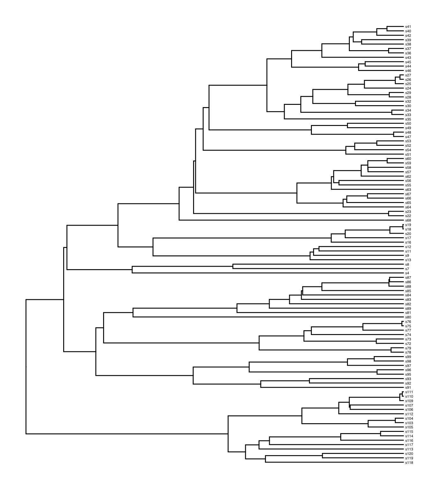
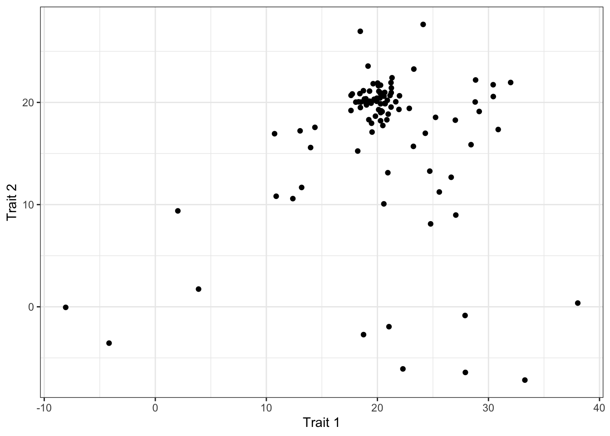

14 Studying Convergence
14.1 Indentifying convergent evolution
The first challenge in the study of convergent evolution is finding a way to systematically identify when it has occurred. For some traits this is easy. For example we can say with some confidence that three groups of mammals (cetaceans, pinnipeds and sirenians) have convergently evolved an aquatic lifestyle.
If we want some support for an assertion of convergent evolution, we can look to ancestral state reconstruction. As shown in chapters 8 and 10, ancestral state reconstruction allows us to look into the evolutionary history trait and potentially make a determination about if a trait arose independently or not.
As we saw in chapter 8, there has been and independent loss of conspicuous sexual swelling in macaques. Namely, Macaca arctoides has evolved this trait independently of the other 4 species (M. sinica, M. radiata, M. thibetana and M. assamensis) that exhibit it.Figure 14.1: Maximum likelihood reconstruction of the evolution of conspicuous sexual swellings in macaques using an equal rates model of evolution.
As you can probably tell, it can be easy to assign convergent evolution to categorical traits and less so to continuous traits. To identify convergence in continuous characters, we need to identify selective regimes.
14.1.1 SURFACE
We can identify selective regimes by reconstructing the trait on the tree and fitting models to the reconstruction. One method to do exactly this is called SURFACE (Ingram and Mahler 2013).
SURFACE stands for SURFACE Uses Regime Fitting with Aikaike information Criterion to model Convergent Evolution. The method has two phases, known as forward and backward.
The forward phase begins at the root of the tree and fits models to the ancestral state reconstruction of the trait or traits in question. At the root, the trait is only experiencing one selective regime (because the root represents one lineage and therefore one trait value). As we proceed forward in time we reach branching points (nodes). At each node we add a new regime, giving us two models. The first model has no change and the new model as a regime shift at the node. This new model is then tested against the no-change model and if the new regime improves the fit of the model to the data, then we accept the addition of the regime.
To summarise, the forward phase begins at the root and identifies rgeime shifts in the evolution of the trait going forward through the tree.
The backward phase is very similar but starts at the tips of the tree. In this phase we go backwards in time and each time we reach a regime shift, we collapse the regime and combine it with others across the tree. Each time regimes are combined, this produces a new model to be compared against the older model. If the combination of two regimes improves the fit of the model, the regimes are combined and we move on. This means that this phase of the analysis will collapse similar regimes together across the tree.
The end product of SURFACE is a list of parameters describing the number of distinct regimes k’, the number of shifts towards convergent regimes c and other useful parameters like the number of convergent regimes reached by multiple shifts and the proportion of shifts towards convergent regimes (see Ingram and Mahler (2013) for details).
14.1.2 A Super Example
Let’s see how SURFACE works. First we need to install the surface package (Ingram and Mahler 2013). Unfortunately this is no longer on the CRAN archive so we need to look elsewhere. Fortunately, MRAN (Microsoft R Application Network) have a handy tool that takes snapshots of the CRAN R packages. This means we can go to MRAN and get a version of surface from before it was scrubbed from CRAN. What heroes!
install.packages("surface", repos="https://mran.microsoft.com/snapshot/2015-06-30")
library(surface)Next we can load some example data.
tree <- read.nexus("Superheroes.nex")
data <- read.csv("Superhero data.csv")
rownames(data) <- data$X
geiger::name.check(tree, data)[1] "OK"The data we have here describe three personality traits of 25 characters from the Marvel and DC cinematic universes. There is also a phylogeny describing the pattern of relatedness between characters. For this analysis, we are going to use all 3 personality traits to try and identify any convergence across universes.
14.1.2.1 Forward Phase
Before we run the analysis, we need to do a little preparation. These functions convert the tree and data into formats that can be analysed by functions called by the surface analysis. nameNodes adds unique node labels to the tree to aid the conversion.
tree<-nameNodes(tree)
olist<-convertTreeData(tree,data[,c(2,3,4)])
otree<-olist[[1]]
odata<-olist[[2]]The function surfaceForward runs the forward phase of the analysis as described above. The more complex your tree and data, the longer this will take.
From this analysis, we can extract the value of k (the number of distinct regimes).
[1] 6For some more details, we can look into the summary of the analysis using surfaceSummary. There are a number of useful components we could investigate further.
[1] "n_steps" "lnls" "n_regimes_seq" "aics"
[5] "shifts" "n_regimes" "alpha" "phylhalflife"
[9] "sigma_squared" "theta" 14.1.2.2 Backward Phase
Next we can collapse the regimes by running the backwards analysis with surfaceBackward.
bwd<-surfaceBackward(otree, odata, starting_model = fwd[[k]],
aic_threshold = 0, only_best = TRUE,
verbose = FALSE, plotaic = FALSE)We can use surfaceSummary again to extract the key parameters.
[1] 4 k kprime deltak c kprime_conv
6 3 3 5 2
kprime_nonconv
1 So we have 6 regime shifts from surfaceForward (k). There are 3 distinct regimes (kprime), 2 of which are convergent (kprime_conv) and 1 is non-convergent (kprime_nonconv).
14.1.2.3 Visualisation
The best thing to do with an analysis like this is visualise the results. We can paint the regimes onto the tree using surfaceTreePlot.
surfaceTreePlot(tree, bwd[[kk]], labelshifts = T, label.offset = .5,
no.margin = T, edge.width = 5, cex = 1)Using the tree like this allows us to spot some patterns. The blue regime appears to be mostly heroes such as Wonder Woman, Captain Marvel and Black Panther. The selective regime that produces heroes occurs 3 times here. Once leading to Wonder Woman and Superman in the DC universe, once leading to a cluster of Avengers plus Professor X in the Marvel universe and a third time leading to Deadpool.
The red regime appears to produce villains such as The Joker and Harley Quinn in DC and Thanos and Magneto in Marvel. Finally the black regime is mostly made up of human beings whose moral leanings may go one way or the other (eg. Lois lane or Colonel Stryker) but are nevertheless grouped separately from heroes and villains.
There are some surprising placements. Batman and Iron Man are both in the same regime (black) which is unsurprising given that they are similar but they are oddly not grouped alongside heroes. This is most likely because of the traits we have used. Let’s plot them out as scatterplots using surfaceTraitPlot.
par(mfrow=c(1,2), mai=c(0.9,0.9,0.2,0.2))
surfaceTraitPlot(data[,c(2,3,4)], bwd[[kk]], whattraits = c(1,2),
cex.opt = 3, cex = 1, cex.lab = 2)
surfaceTraitPlot(data[,c(2,3,4)], bwd[[kk]], whattraits = c(3,2),
cex.opt = 3, cex = 1,cex.lab = 2)These plots show how the traits cluster along with the average value for each regime (larger point).
14.2 Quantifying convergent evolution
SURFACE and other methods identify convergent evolution but sometimes we might be more interested in finding out how strong the convergence is. Taking our superhero example a little further, we might expect that there would be particularly strong convergence between similar characters. We could lump together characters like Iron Man and Batman who are essentially humans with access to lots of technology. Alternatively, we could look at superpowered aliens such as Thanos, Superman and Thor or perhaps characters with military backgrounds such as Deadpool, Colonel Stryker, Captain Marvel and Captain America.
Groupings such as these with a convergent characteristic are called focal groupings. We can quantify the strength of convergence by measuring how similar the focal group members are to each other relative to the group as a whole. The way to do this is to calculate the Wheatsheaf Index (Arbuckle et al. 2014).
14.2.1 The Wheatsheaf Index
The Wheatsheaf Index (W) requires us to calculate the Euclidean distance between species in phenotypic space. First we calculate the mean distance between all the species in the sample and then the mean distance between the focal group species. Finally, we calculate W by dividing the total distance by the focal group distance. If we get a value greater than 1, then we can say that the focal group are more similar to each other than to the group as a whole and thus, quantify the strength of convergence.
The package to perform a Wheatsheaf analysis is called windex (Arbuckle and Minter 2014). The package contains some example data for us to use.

This scatterplot represents the phenotypic space described by the two traits. We can see there is a clear clustering of species but the question we have to ask is, does this pattern mean convergence and if yes, how strong is that convergence? 
To make things clearer, let’s highlight our focal group species in phenotypic space by plotting them in red.
It’s clear that the focal group species cluster very closely. The tree shows us the taxonomic distribution of the focal group. So it seems that this clustering cannot be explained by common descent.
To calculate W, we can use the windex function. Remember that a value of W greater than 1 indicates the focal group is more similar to each other than to the group as a whole.
$`Wheatsheaf Index`
[1] 5.289446
$`Lower 95% CI`
[1] 5.121161
$`Upper 95% CI`
[1] 5.413457Here the value of W of 5.29 indicates very strong convergence as we would have predicted by using the traitspace.
The question we have to answer now is whether the value of W is higher than expected given the shape of the tree. This can be done using the function test.windex which performs a number of bootstrap replicates of the analysis, resampling the tree and data as many times as we ask (1000 is standard but it takes a while!).
t <- test.windex(sample.data, sample.tree,
traits = c("ou1", "ou2"),
focal = sample.data[,2], reps = 100,
SE = FALSE, plot = TRUE)The plot here shows the distribution of the bootstrap replicates. We can see from the plotted line that the calculated value and the accompanying confidence intervals are far separate from the distribution of the replicates. This indicates a high degree of confidence in some unusually strong convergence here. As we can see, the p-value backs this up.
$`P-value=`
[1] 0Bibliography
Arbuckle, K., Bennett, C.M., and Speed, M.P. (2014) ‘A Simple Measure of the Strength of Convergent Evolution’. Methods in Ecology and Evolution 5 (7), 685–693
Arbuckle, K. and Minter, A. (2014) Windex: Windex: Analysing Convergent Evolution Using the Wheatsheaf Index [online] available from <https://CRAN.R-project.org/package=windex>
Ingram, T. and Mahler, D.L. (2013) ‘SURFACE: Detecting Convergent Evolution from Comparative Data by Fitting Ornstein-Uhlenbeck Models with Stepwise Akaike Information Criterion’. Methods in Ecology and Evolution [online] 4 (5), 416–425. available from <https://doi.org/10.1111/2041-210X.12034>